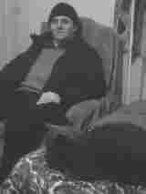

Thursday, August the 5th, 2004
back to: title, date or indexes
Last week (28 July) we invited applications for the post of Hooting Yard Tsar. After much soul-searching we have appointed an Antipodean, Bruce Gilbert, seen below in his full regalia. Bruce has been given draconian powers, and it is to be hoped that he will exercise them without fear, favour, or even basic common sense.

It has been pointed out that if we are to have a Tsar, we cannot in all conscience do without an Ombudsman, too. The successful applicant will work closely with the Tsar, although in what manner is not yet clear. The pair may, for example, do something about that abandoned birdseed silo which is getting on my nerves. That would be a start. If you would like to be the Hooting Yard Ombudsman or Ombudswoman, send a photograph of yourself dressed as a bee, together with a brief statement of no more than a hundred words beginning: You know, I think I'd be a terrific ombudsperson because…